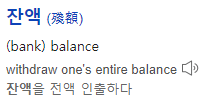
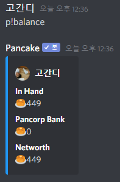

기본 시스템 구조 이해
팬케이크 금융 시스템 파트이니 금융 위주 설명을 할 예정입니다.
화폐는 Pancakes(팬케이크)로 통일됩니다.
자신의 돈이 얼마나 있는지 보고싶다면
p!balance를 입력하세요.

Balance의 뜻은 잔액이라는 뜻이네요.

말 그대로 자신의 잔액을 보여줍니다.
In Hand는 자신의 현금이 얼마나 있는지를 알려줍니다.
Pancorp Bank는 팬케이크 은행인데 자신이 은행에 넣어둔 돈이 얼마인지를 나타냅니다.
Networth는 가지고 있는 돈의 총액수를 알려줍니다.
처음 본다면 기본금이 있을텐데 아마 채팅 횟수나 팬케이크 명령어 사용 횟수로
기본금이 지급되는 것으로 추정하고 있습니다.
고간디가 디스코드 폐인이라서 채팅을 젤 많이 쳤는데
고간디는 기본금이 5000원이었습니다.
그에 반해 성테나 미노는 채팅을 많이 안 쳐서 기본금이 세 자리수였지요.
정확한 기준은 저도 모르니 팬케이크 개발자에게 물어보세요.
입금법과 출금법은 따로 알려드리도록 하겠습니다.
서버에서 번 돈으로 낚시도 가능하고 돈을 뺏는 것도 가능합니다.
돈을 잘 벌고 뺏기지 않고 잘 보관하기 위해서 설명서를 잘 읽어주세요.
돈은 낚시를 이용해서 벌고 이와 관련해서는
따로 알려드리도록 하겠습니다.